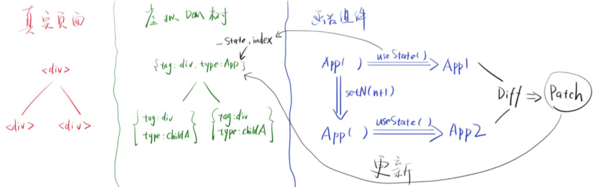
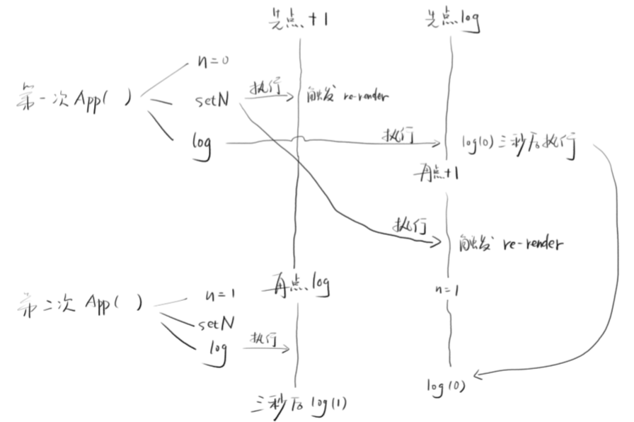

本文主要会就 React hooks 中用的比较多的
useState做一个详细讲解，其他的 hooks 会涉及到原理和使用但不会涉及到源码仿写，望周知
实现 useState
useState 是怎么用的
在实现一个 useState 之前，先来看看 useState 大致是怎么用的
import React, {useState} from "react"; |
这里是一个简单的 加法器的应用，所以这里的效果就是点击一下 button, n 就会加 1。那么这里面的过程是怎么样的呢，这里分 2 部走
- 首次渲染
首次渲染时，会调用App()函数，得到一个 虚拟 DOM，然后再创建真实 DOM - 用户点击 button 时
会先调用setN(n+1)函数，然后再次 render 渲染，渲染就调用App()函数，然后再次得到一个新的虚拟 DOM，这个虚拟 DOM 会和之前的虚拟 DOM 做一个 Diff 的操作，然后再更新对应的真实 DOM
这里注意，每次调用
App()函数时，都会调用useState(0)
所以这里我们可以看到两个问题
- 在执行
setN时，n 不会变，但是App()函数会重新执行 App()函数在执行后，在useState(0)时，每次的 n 的值都是不同的
分析 useState
对于数据 X 来说，使用 useState 会有如下的规律
setNsetN一定会修改数据X, 将n+1存入XsetN一定会触发<App/>并重新渲染(执行App()函数)
useState
useState肯定会从X读取n的最新值X
每个组件都有自己的数据X，其实就是所谓的state
实现 useState 初级版本
有了以上的分析，可以写一个简单的 useState 了
let _state; // 全局变量 |
这里为了方便起见，其 render 函数就直接调用了 ReactDom.render。比较关键的是这个全局的 _state，这个 _state 是一个全局的变量，为了下次渲染时不被初始化而设立的，setState 实际上就是一个回调，作用就是 保存 state 并开启渲染，所以这里可以知道为何在调用 setN 时，n 不会变了。因为此的 n 只是被存放在 _state 中，最后返回的 _state 中才是变化的 n，而只有再次渲染才能得到这个变化的 n
实现 useState 升级版本
但是目前还有一个问题，就是万一同一个组件，调用用了 2 次以上的 useState 怎么办。以上的初始版本的代码会带来什么问题呢？就是因为 _state 是全局的，导致组件的数据之间会相互冲突
解决思路
解决的思路有两个
- 将
_state变成对象的形式，比如变成_state: {n: 0, m: 0}
实际上这样做是不可取的，因为useState中参数就是传一个初始值(initValue)，这种情况下我们怎么知道是n是 0, 还是m是 0 呢 - 将
_state变成数组的形式，比如_state: [0, 0]
这种是可以的，因为可以通过下标区分每个useState的数据
实现代码
let _state = []; // 全局变量 |
既然要采取上面的数组的方案做，那么 _state 自然初始值就是一个数组。其他的逻辑并没有变化，主要是增加了一个全局的变量 index 以及一个 useState 中的临时变量 currentIndex。每次当 useState 执行时，index 就自增 1 与其他的 state 做区分。currentIndex 的作用是能让 _state[0] 有个初始值而不至于是 undefined。同时在每次 render 时需要将 index 置为零。这样一来每次执行 useState 得到的就是不同的 n 以及 setN 了
数组方案的主要缺点
数组的一个很明显的缺点就是它的 调用顺序。因为数组非常强调顺序，所以在 React 中不允许出现类似如下的代码
import {useState} from 'react' |
React 就会报如下的错误
❌ :React Hook “React.useState” is called conditionally. React Hooks must be called in the exact same order in every component render
意思是说，React 不能依照条件调用 useState，在每个组件渲染时应该依照一样的顺序调用 hooks
所以在使用 React 相关的 hook 时，上面的代码是不被 React 允许的
数组方案的其他缺点以及解决方案
App组件使用了全局的_state和index，那么其他组件怎么用？不还是冲突了么？
只需要在每个组件内部维护一个_state和index即可- 对于类组件来说，不存在全局作用域重名的问题，对于函数组件来说就有，这个时候怎么办？
只需要将_state和index放在组件对应的虚拟 DOM 对象上即可
原理是这样的

在函数组件调用了 useState 时，就会更新绑定在虚拟 DOM 对象上的 _state 和 index，当下次数据有变化触发 render 时，会再次调用 useState 并生成一个新的虚拟 DOM 对象，这个对象会跟之前的旧对象进行一个 Diff 的操作，对比出要更改的节点后会出一个 Patch，然后再根据这个 Patch 更新虚拟 DOM 上的数据，这里面包括了 _state 和 index，最后再修改生成一个真实 DOM 节点。
useState 注意点
对于其使用状态
const [n, setN] = React.useState(0) // 这里 n 的初始值就是 0
const [m, setM] = React.useState({name: 'xxx'}) // 这里 m 的初始值就是 {name: 'xxx'}不可以局部更新
代码链接const [user, setUser] = useState({ name: "xxx", age: 18 });
const onClick = () => {
setUser({
name: "Jack"
});
};
return (
<div className="App">
<h1>{user.name}</h1>
<h2>{user.age}</h2>
<button onClick={onClick}>Click</button>
</div>
);从贴出的代码链接可以看出，点击 button 后，
user.age并没有显示出来。这是因为 setState 并不会帮你合并属性，要合并的话需要自己额外操作，比如利用拓展运算符...setState(obj)中的地址要变
代码链接const [user, setUser] = useState({ name: "xxx", age: 18 });
const obj = user // 注意这里 !!!
const onClick = () => {
obj.name = 'Jack' // 注意这里 !!!
setUser(obj); // 在这种情况下页面数据是不会更新的 !!!
};
return (
<div className="App">
<h1>{user.name}</h1>
<h2>{user.age}</h2>
<button onClick={onClick}>Click</button>
</div>
);只要
obj的地址没变，React 就认为其数据没有变化，因此就不会触发更新useState可以接受一个函数const [state, setState] = useState(() => initialState) // 该函数返回初始值 state，且只执行一次
setState可以接受一个函数const [n, setN] = useState(0)
const onClick = ()=>{
setN(n+1)
setN(n+1) // 你会发现 n 不能加 2
// setN(i=>i+1)
// setN(i=>i+1) // 但是使用了函数之后就可以加 2
}
return (
<div className="App">
<h1>n: {n}</h1>
<button onClick={onClick}>+2</button>
</div>
);所以为了避免 bug，应该优先使用这种在
setState中传函数更新state的方式
useState 总结
- 每个函数组件对应着一个 React 节点(FiberNode)
- 每个节点保存着
_state和index - useState 会读取
_state[index] index由 useState 出现的顺序决定setState会修改_state，并且之后会触发更新
⚠ 注意：这里只是一个对
useState的思路型源码，并非是 React hook 中的源码。另这里的_state对应源码中的memorizedState，而index在源码中是利用链表来实现的。这里只是抛砖引玉一下。
useReducer
useReducer 本质就是用来践行 Flux/Redux 的思想的这么一个 hook，例子的代码链接在这里
使用 useReducer
首先是声明一个 initial 初始变量
const initial = { |
然后声明 reducer
const reducer = (state, action) => { |
然后在 App() 函数组件中使用将这个 reducer 以及 initial 值当作参数传入 useReducer 中，返回的就是一个 state 和 dispatch
// 注意这里参数的传入顺序 |
可以看出，以上的代码是分几步走的
- 创建初始值
initial - 创建
reducer这个操作的集合，它接受一个state和一个action - 将
reducer和initial传给useReducer，并得到一个读(state)和写(dispatch)的 API - 调用写(
dispatch) API 传入{type: '操作类型'}去对state做相应的更新
从以上描述我们不难看出，这个 useReducer 可以用来代替 redux
使用 useReducer 代替 redux
由于代码太长了所以这里就不放代码了，详情可以点击链接中的代码去查看
由以上的代码我们可以知道一个基本的使用 useReducer 代替 redux 的步骤为
- 声明一个
store对象，对象中存放着该组件使用的数据 - 声明一个
reducer，所有的相关的 crud 之类的操作都往这个里面放 - 使用
createContext创建一个Context，为组件间传递数据做准备 - 在
App组件中使用useReducer创建读写 API，在其子组件中使用useContext创建读写 API(读: state 访问数据, 写: dispatch 对数据进行操作) - 将第 4 步的返回内容放入到第 3 步的
Context.Provider组件的value中 - 使用
Context.Provider将Context提供给所有组件 - 然后各个子组件使用
useContext(Context)获取到读写 API
当然了，如果涉及到模块化的问题，将代码分开就可以了。比如
Context.js 中可以放入
// Context.js |
reducers 可以单独建立一个文件夹，里面放入的都是对应数据的一些操作，比如对 book 的操作可以这么写
// reducers/books_reducer.js |
然后 App 子组件就放入 components 文件夹中，里面就是组件的一些东西了，这里不再赘述
最后的最后，在从 src/index.js 中引入这些文件即可，然后再做相应的代码优化。实际上模块化的本质就是分类整理代码，这样做了之后基本就能起到替代 redux 的作用了
useReducer 注意点
需要注意的是，useReducer 本身也不会帮你合并属性，所以同 useState 一样，要合并属性时需要自己动手操作
useReducer 总结
总的来说，useReducer 这个 hook 其实本质上借鉴了 Flux/Redux 的一些思想，我们可以通过一些 hooks 来创建一个类似 redux 的写法，只要将其模块化后就可以替代 redux
useRef
在理解 uesRef 之前，先看一个例子
useState 的 bug
import React, { useState } from "react"; |
现在有个问题，在点击完 +1 button 然后点击 log，打印出来的 n 是正常的。但是如果是先 log 然后立即执行 +1，那么我们可以发现一个 bug，就是 n 居然没有变化!!!居然还是之前的旧数据!!!
wtf, 这是什么情况???
先来看一张图

- 如果先点 +1 再点 log
setN会先执行，然后触发render，3 秒过后，log里面读到的n就是 已经从useState里面读出来的n，所以n = 1 - 如果先点 log 再点 +1
log会先执行，但是注意，此时log里的n还是初始状态下读到的 旧的n，随后setN执行后会产生一个新的n。然而此时其触发的render早就更新页面上的n了。所以会出现这种 “滞后” 的 bug
useState bug 的解决方案
将
n和setN挂在全局变量window上
这种解决方案太傻了，不考虑变量之间相互污染的问题么?使用
useRefimport React, { useRef } from "react";
export default function App() {
const n = useRef(0);
const log = () => setTimeout(() => console.log("n =", n.current), 3000);
return (
<div className="App">
<p>{n.current}</p>
<p>
<button
onClick={() => {
n.current += 1;
}}
>
+1
</button>
</p>
<p>
<button onClick={log}>log</button>
</p>
</div>
);
}但你会发现这种方案，页面上的元素不更新了，于是你可以这么改代码
import React, { useRef, useState } from "react";
export default function App() {
const n = useRef(0);
const update = useState(0)[1]; // 注意这里!!!
const log = () => setTimeout(() => console.log("n =", n.current), 3000);
return (
<div className="App">
<p>{n.current}</p>
<p>
<button
onClick={() => {
n.current += 1;
update(n.current); // 注意这里!!!
}}
>
+1
</button>
</p>
<p>
<button onClick={log}>log</button>
</p>
</div>
);
}这里做了一个小 trick，就是使用
useState返回的第二个函数强制更新。。。当然这种方式太过 hack 肯定是不推荐的。不过由此我们可以知道useRef可以作为一种 贯穿始终的状态 来解决useState使用上的 bug
与 forwardRef 的关系
使用 useRef 时，props 是不能直接传递 ref 属性的，比如下面的代码
function App() { |
浏览器会报错
Warning: Function components cannot be given refs. Attempts to access this ref will fail. Did you mean to use React.forwardRef()?
React 这个时候提醒你使用 React.forwardRef() 来传 props 中的 ref 属性，于是你可以这么改
function App() { |
当然你也可以通过两次传递 ref 来得到 button 的引用，这里就不细讲，有兴趣的童鞋可以参考这个链接
这个例子本质上也是参考上面代码的例子，只是这里我们需要理解的是 ref 属性是可以传一个引用的
所以由上面的例子我们知道了，其实 useRef 既能引用 DOM 对象也能引用普通对象，但是在传 ref 时需要用到 forwardRef
而对于 forwardRef 来说，由于 props 不包含 ref(主要是大部分时候也不需要 props 去传一个 ref)，这个时候才需要 forwardRef。
而 forwardRef 本身就是通过 ref 的透传来实现对于指定的 DOM 的定位的，这一点和 Vue 的 refs 是一样的
useRef 总结
由于每次的渲染，组件函数中对应的 state 都会不一样，比如上述代码中的 n。如果希望拿到同一个 n，那么可以考虑使用 useRef 这个 hook，那么这个时候你就需要访问的是 n.current 而不是 n 了。
useRef 不能做到变化时自动更新 render，前面说过解决方案，就是通过监听 n，当 n.current 变化时调用 update 解决，这里需要配合 useState 这个 hook 来使用。也就是说这个功能需要你自己加
useContext
其实想想，Context 的译文就是 “上下文”。那么什么是上下文呢？
- 全局变量 是全局的 上下文
- 上下文 是局部的 全局变量
实际上 useContext 的用法跟 useRef 差不多，不过 useContext 不仅能贯穿始终，还能贯穿不同组件
使用 useContext
import React, { useContext, useState } from "react"; |
所以我们从中可以看到使用 useContext 的步骤了
- 使用
C = CreateContext(initial)创建上下文 - 使用
C.Provider来限定要传的值的作用域在这个范围内 - 然后在
C.Provider的作用域内使用useContext(C)来使用上下文(也就是C.Provider组件里面的value)
useContext 注意点
useContext 这个 hook 并不是响应式的，在一个组件中将 C 里面的值改变了(比如上述代码中的 theme 改变了)，另一个组件并不会知道这个变化。所以如果需要能够响应式，最好是配合 useState 来使用
useContext 总结
如果希望拿到同一个 n，那么可以考虑使用 useContext 这个 hook，只需要将 useRef 的地方改成 useContext 就行
useEffect
这个就是 “副作用” 了，什么意思呢？
- 在 js 中，我们把对环境的改变就叫 副作用，一个很典型的例子就是 修改
document.title - 一定非得要把一些副作用的操作放到
useEffect中执行么？不一定 - 你可以把它理解为
afterRender，因为这个总在render后执行
React 渲染的大致流程如下
App() --> 执行 --> 生成虚拟 DOM -- |
如上面所示，在改变外观这里，render 完毕之后，就会执行 useEffect。
使用 useEffect
useEffect(() => {}, [])
由于第二个参数传的是一个空数组，所以第一个参数函数只有在第一次渲染时执行useEffect(() => {}, [n])
由于第二个参数传的是一个[n]，这里表示只要n有变化，那么第一个参数函数就会执行useEffect(() => {})
由于没有传第二个参数，这里就表示 任何一个 state 变化时都不会执行
useEffect 还有个用法，就是当组件处于 componentWillUnmount 时，即组件快要挂掉时使用，比如
useEffect(() => { |
useEffect 还有一个特点跟 useState 一样的，就是如果同时存在多个 useEffect， 会按照其出现的次序执行
useEffect 总结
- 在对环境有些副作用操作的时候用
useEffect - 前面说的
useEffect的几种用法中，可以都同时存在 - 可以将
useEffect理解成 “afterRender”，因为它就是在 render 之后执行的
useLayoutEffect
如果说 useEffect 在浏览器渲染完成后执行，那么 useLayoutEffect 就是在浏览器渲染完成前执行，它的位置在如下所示的位置
App() --> 执行 --> 生成虚拟 DOM -- |
useLayoutEffect 特点
- 由图可知，
useLayoutEffect总是比useEffect先执行 useLayoutEffect里的操作最好是影响了 layout，虽然它性能更高，但是如果在这个里面的操作很多，它会影响用户看到画面变化的时间。从用户的角度来说，这是很影响用户体验的
useLayoutEffect 总结
- 是跟
useEffect差不多的玩意儿，不同之处在于其执行的优先级，它的优先级比useEffect高 - 为了用户体验，在能使用
useEffect解决问题的前提下，尽量不要使用这个useLayoutEffect
useMemo
这里 Memo 的全称应该是 Memorize 也就是 “记忆”，这个钩子的作用就是记忆代码，如果有多余的代码就不执行，怎么理解呢，在理解这个之前，需要先看看 React.memo
理解 React.memo
假设有如下的代码
function App() { |
传入的 props.data 根本没有变化，即 m 没有变，变的只是 n，但是这里 Child() 每次都执行了，要是 Child() 函数里面有很多的代码，势必会造成页面的卡顿现象，于是这个时候，React.memo 就排上用场了
function App() { |
如果 props 没变，就没有必要再次执行一个函数组件，这个 React.memo 是属于 React 优化的一部分。原理就是跟缓存的道理一样的。在 React 中，其默认有多余的 render。为了解决这个问题后面才出来 memo
React.memo 的 bug
请看如下的代码
function App() { |
为什么在这种情况下 React.memo 的优化作用失效了呢？因为在点击 button 更新 n 的数据时会再次渲染页面，就会再次执行 App()，就会再次声明 onClickChild 这个函数，而这个函数的地址已经变了!!!!。因为这个函数地址变的原因，React 就判断其 props 产生了变化，于是就认为 Child 组件已经变化了，需要重新渲染它!!，于是乎 Child() 就会再次执行!!!
那么还有什么解决办法呢？有的，就是使用 useMemo，使用这个 hook 就不会有这个问题
使用 useMemo
使用 useMemo 去解决上面的 bug 的话，只需要将 onClickChild 函数修改成如下
const onClickChild = useMemo(() => { |
useMemo第一个参数是一个工厂函数() => value, 第二个参数是依赖[n, m]，只有当依赖变化时，才会计算出新的value- 如果依赖没有变化，则服用之前的
value
useMemo 注意点
如果本身
value是一个函数，你就必须要这么写useMemo(() => x => console.log(x), [m]) // 注意这里是一个返回函数的函数
如果觉得这很不优雅，推荐使用
useCallback
useMemo 总结
从本质上看 useMemo 有点像 Vue 中的 Computed，其计算属性本来就依赖一个会变化的数据，数据变化时 vue 会帮你做相应的更新操作
useMemo 一般是结合 React.memo 做一些代码层面的优化工作
useCallback
useCallback 就是为了解决上述 useMemo 中 value 是一个函数时的传参写法问题的，它的用法如下
useCallback(x => console.log(x), [m]) |
其等价于useMemo(() => x => console.log(x), [m])
useCallback 总结
这个是跟 useMemo 功能相近的 hook，主要为了补充 useMemo 传参的写法用的
useImperativeHandle
你可以将其理解为 setRef，其作用就是 自定义 ref 的属性，代码链接在这里
关键的代码在这一句
setRef(ref, () => { |
其实就是给 ref 增添了属性，让其对应的 ref 能够访问到 realButton 这个属性以及能够调用 x 这个方法
hooks 其他内容(dlc)
如何自定义 hook
拿 useState 举例，可以将自己定义的 hook 作为一个模块封装起来然后 export 出去，具体来说就像如下代码所做的
import { useState, useEffect } from "react"; |
所以我们可以看到，这里本质上就是对 useState 这个 hook 做了一层封装，然后返回的依然是 state 以及 setState 这个方法，即返回的是一个读(查)写(增删改) API
自定义 hook 注意点
- 也可以在自定义 hook 里面使用
ContextAPI useState可以在函数里使用，关键是这个函数是在组件里面运行的就可以
Stale Closure
这个主要是被尤大吐槽过的，说他在读一些使用 hooks 写的库时就十分的脑壳疼，评价其为过时的闭包(stale closure)
那么过时闭包是怎么一回事呢，来看如下的代码
function createIncrement(i) { |
最后 log 居然还是之前第一次的 value, 这不科学！！！但是这是正常的，毕竟你保存的是第一个函数执行的地址，而其他函数执行地址跟这个不一样，所以才有这个问题
于是解决办法也有，其实只要每次得到最新的 value 就可以了
function createIncrementFixed(i) { |
所以说 hooks 中也有解决这些过时闭包的 bug 出现的措施，就是依赖更新。
比如 useEffect 中要传的第二个参数，比如 useState 中 setState 传一个函数更新的形式，都是为了解决这个 bug 而出现的举措。
这里就不详细说明了，有兴趣的童鞋可以去参考我列出的链接